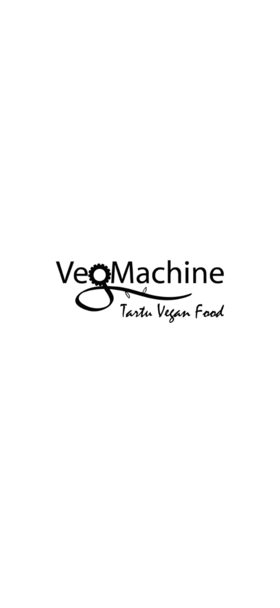

Kauss Poké pole tavaline Poke Bowl! Kauss Poke's saavad kõhu head ja paremat täis nii taimetoidu armastajad kui ka lihasõbrad!

VEG MACHINE
Veg Machine ehk masin mis teeb ja pakub vaid rõõmsameelset vegan toitu. Olulisel kohal on taaskasutus ja roheline mõtteviis!
TRIKSTER TIHANE
Trikster Tihane pakub oma külalistele värskelt valmistatud roogasid. Valikus on suppe, salateid, kana, kala ja veiseliha. Menüüs on saadaval ka maitsekaid roogasid taimetoidu armastajatele